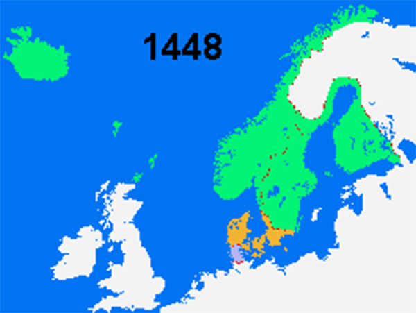

Sovereign.
The Kalmar Union has a long and somewhat tumultuous history. It is comprised of the Kingdoms of Denmark, Sweden, and Norway in addition to their colonies: Finland, Gotland, Iceland, Greenland, the Shetlands, and numerous small islands.
Each nation has its own King and from among these a ruler of the Kalmar Union is elected to dictate foreign and intra-union policies. During the last election there were hostilities when Christian I of Denmark was chosen over Karl Knutsson Bonde of Sweden. When peace was restored, Christian I retained the title and Karl Knutsson Bonde was relegated to the King of Sweden.
Recently the historic pirate base of Gotland in the Baltic Sea has been increasing in activity. Sweden has suffered a major blow to it maritime commerce as the island lies between its shores and those of it colony Finland. The pirates have grown bolder and even begun to stop Swedish trade from exiting the Baltic Sea and interfering, crippling the Hansa in Stockholm.
The Hanseatic League has offered minimal support, asserting that they won't risk their limited para-military if the Kalmar Union won't even defend its seas. Denmark has made several shows of dispatching fleets to combat the pirates but these have mostly been for show. Meanwhile Karl Knutsson Bonde has begun to mobilize Swedish forces to, "resurrect the glorious Kingdom of Sweden." Whether that means an invasion of Gotland or Denmark remains to be seen.
A map of the Kalmar Union, circa 1448
A brief history of the Kalmar Union can be found here.


IVAN III DEMANDS FEALTY FROM MONGOL KHANATES
SWISS MILITARY MOBILIZING FOR WAR
POPE SIXTUS IV ISSUES NEW PROCLIMATION
PORTUGESE NAVY SEIZES ANOTHER MOROCCAN HARBOR TOWN
WAR OF THE ROSES NEARS CLOSE AFTER DECISIVE BATTLE